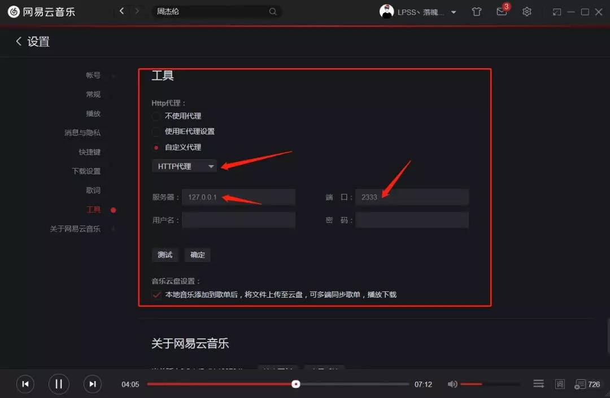
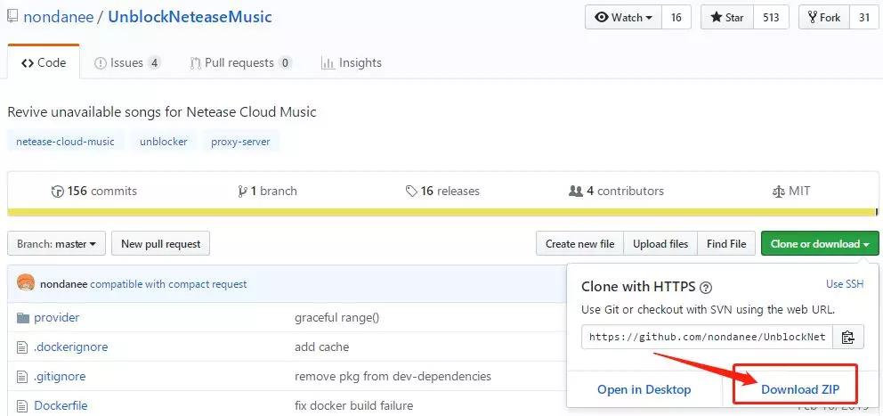
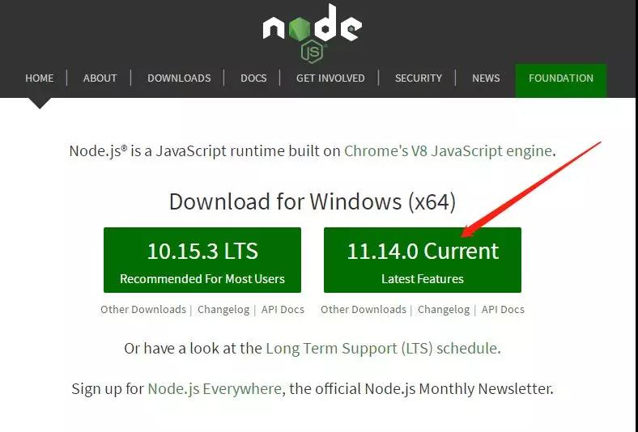
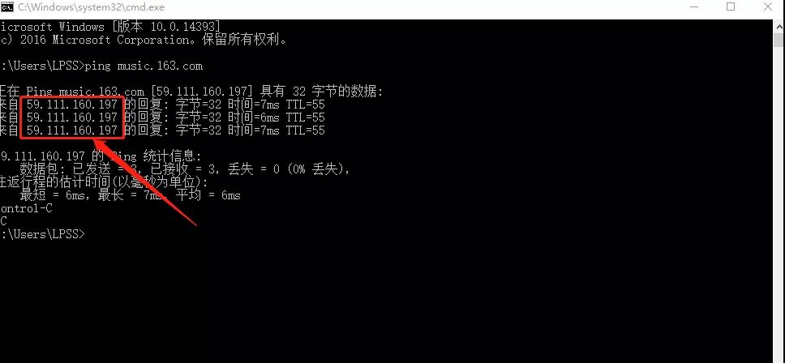
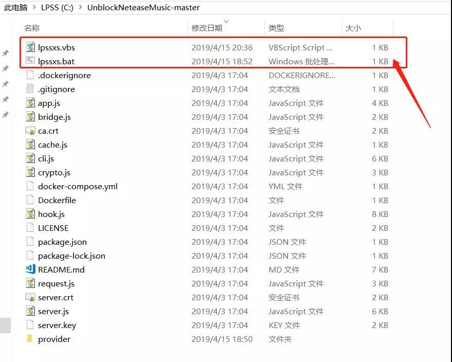
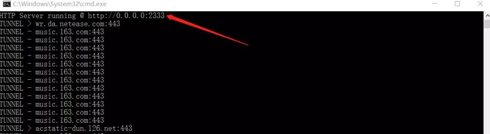
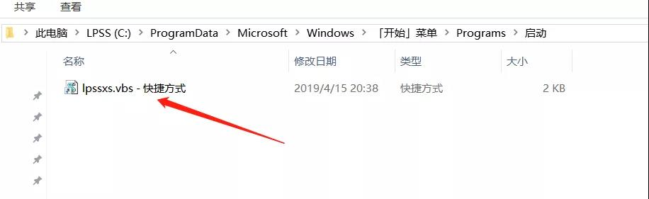

1 | 声明：本教程只用作学习交流，请勿做他用，如有侵权，请联系我删除； |
该项目代码托管在Github上，并且更新频繁，感谢作者制作并维护这个项目；
废话不多说，这个项目可以让你实现在全平台的网易云客户端实现无限制听歌，什么叫无限制听歌？就是VIP，无版权，甚至加灰的都能听啦！就问你牛不牛X，强不强大！
该项目的实现原理如下：
- 使用网易云旧链 / QQ / 虾米 / 百度 / 酷狗 / 酷我 / 咕咪 / JOOX 音源替换变灰歌曲链接 (默认仅启用前四)
- 为请求增加 X-Real-IP 参数解锁海外限制，支持指定网易云服务器 IP，支持设置上游 HTTP / HTTPS 代理
- 完整的流量代理功能 (HTTP / HTTPS)，可直接作为系统代理 (同时支持 PAC)
使用方法（参考图片设置）
- 自定义代理 ：填写服务器地址和端口号
- 代理服务器地址：127.0.0.1 （推荐本机搭建，速度快）
- 代理服务器端口：2333 （可以自定义）

##Windows搭建教程：
下载项目源码
https://github.com/nondanee/UnblockNeteaseMusic
会用git直接clone
1 | git clone https://github.com/nondanee/UnblockNeteaseMusic.git |
不会的直接点下载

（推荐放C盘根目录）
安装node.js
官方网站：www.nodejs.org

（下载安装最新版即可）
获取网易云域名IP
ping music.163.com

（记录这个IP，稍后使用）
制作bat脚本 & vbs脚本
- 新建一个文本文档，把以下三条代码复制进去命名保存
- 文件后缀改成 .bat 格式
1
2
3@echo off
cd C:UnblockNeteaseMusic-master
node app.js -p 2333 -f 59.111.160.197 - 新建一个文本文档，把以下三条代码复制进去命名保存
- 文件后缀改成 .vbs 格式
1
2Set ws = CreateObject("Wscript.Shell")
ws.run "cmd /c lpssxs.bat",vbhide - bat & vbs 文件请放一个文件夹中
（C:UnblockNeteaseMusic-master）

（注： lpssxs.bat是我个人命名，大家根据自己命名修改即可）
执行脚本
右键以管理员权限运行bat即可

（测试运行效果如图）
客户端填写代理信息
将刚刚创建的信息依次填入保存
按照网易云提示重启一下网易云即可

设置开机自启
将vbs创建快捷方式放到自启文件夹即可
Windows自启文件夹路径：
C:ProgramData/Microsof/tWindows/Start/MenuProgramsStartUp

如果嫌手机使用麻烦的话，推荐使用 UnblockNeteaseMusic 安卓版